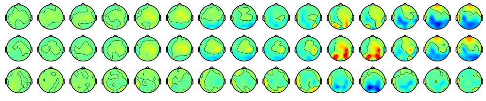

Electroencephalography (EEG)
We are our brain.
My toolbox includes approaches of EEG analysis, such as event-related potentials (ERPs) and event-related spectral pertubations (ERSPs),
but also more complex connectivity analysis such as event-related phase-amplitude coupling (ERPAC)
and machine learning and decoding techniques like multivariate pattern analysis (MVPA) and the generalization across time (GAT) method.
Over the last years, I have recorded many human EEG recordings during virtual reality games. See a few examples on my YouTube channel.